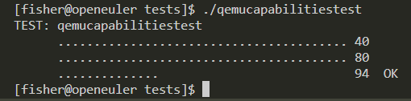

前言
在做OSPP项目的过程中，导师问我要不顺便参加OpenEuler的开源实习，正好libvirt有几个开源实习的任务，让我顺便一起做了。本来我就已经参加了这个活动，待在MindSpore社区，现在正好在OpenEuler社区也领一些任务做，涨涨积分。看了一下virt-sig组的任务之后，我选择先做libvirt 6.2.0支持vhostuser类型磁盘这个任务。
任务分析
目前的libvirt 6.2.0版本不支持vhostuser类型的磁盘，而最新版已经支持该特性，因此该特性应该在更高的版本中支持的，所以我们需要定位其最初支持的那个版本。定位的方法很简单，就是查询官网上面的Release Changes，地址在这里，通过搜索可以了解到，该特性最初在libvirt 7.1.0版本中支持。
了解到该特性最初支持的版本之后，使用Git将仓库切换到v7.1.0版本，搜索提交日志，将支持该特性相关的commits找出来，与当前v6.2.0版本的代码进行对比，观察代码的变化，确定哪些是需要进行修改的，哪些是可以保留的。在我一页页翻着Git logs时，导师发了一个bugzilla的链接过来，里面包含了支持vhostuser类型磁盘相关的所有commits，使一筹莫展的我醍醐灌顶，根据链接中提到的commits分析，随后回合即可。
回合过程
流程简介
我的回合流程有以下几个步骤：
git cherry-pick将相关commits合并到当前分支- 解决
cherry-pick过程中产生的代码冲突，尚不清楚功能的新代码和新文件倾向于保留 - 尝试编译，遇到错误根据错误日志解决问题，直至编译成功
- 运行测试，根据测试结果寻找相应错误地方，并将错误解决
- 删去多余的代码，
cherry-pick过程中不可避免的拉取了一些多余的代码，将其删去，保证代码精简
问题一：代码冲突
cherry-pick过程中不可避免地会产生代码冲突，尤其是跨了一个大版本的库，因此我采取的策略如下：
- 对于
Makefile冲突文件，均采取舍弃的策略。由于6.2.0的构建系统为make，而7.1.0版本的构建系统更换为meson，因此有关meson.build的新增文件一律舍弃，并做好文件变动记录，手动在Makefile中添加需要编译的文件。 - 对于代码发生移动的更改，均采取舍弃的策略。在
7.1.0版本中，许多代码从原本的文件中抽离出来，使得代码和文件结构更加模块化，而在6.2.0版本中，由于移动代码涉及到的变动非常大，包括：头文件、函数名、Makefile等均需要做出改动，因此只能采取舍弃的策略。 - 对于代码发生冲突的区域，分析代码的变动，在保证函数功能不发生变化的情况下合入更改。由于发生改动的函数可能被很多其他模块所使用，因此在合入更改的适合需要分析更改是否会影响到函数本身的功能，避免其他模块出现不可预测的错误。
将有关commits全部合入之后，检查发生变动的所有文件，检查是否存在明显的语法错误，检查完毕后便可以尝试手动编译。
问题二：编译错误
下面这张图很好地说明了我在编译过程中遇到的问题
错误日志提供的信息还是很详细的，按照日志定位到错误的地方，解决对应的问题就可以了。我在编译过程中遇到的问题主要是枚举类缺少相应枚举字段以及switch分支缺少对应case，将其补充上即可。同时需要注意的是，6.2.0到7.1.0中间支持了很多其他特性，这些特性在cherry-pick的过程中同时写入到了枚举类中，但实际上并没有对应的代码支持这些特性，因此需要将这些“假支持”的特性给删掉。
解决完以上问题后，编译就能成功了，编译成功也意味着合入的代码在编译链接的过程中是没有错误了，剩余的工作就要测试验证功能是否正常工作。
问题三：枚举顺序引发的惨案
由于我没有Jenkins之类的自动化测试环境，我只能手动地去跑一些跟本次任务相关的测试用例，待导师上班之后再问问他如何自动化运行所有测试。
因为在代码回合的过程中发现修改的测试数据都集中在qemucapabilitiesdata这个文件夹中，因此跟本次任务相关的单元测试主要是build/tests/*cap*相关的测试。运行一下测试就会发现报错，并提示运行一个更为详细的debug命令，运行该命令后会得到一个详细的错误报告，提示出现错误的地方。
从上图可以看到，预期输出应为vhost-user-blk，而实际输出为object.qapified，这个错误是由枚举类的顺序错误引起的，我将这两个字段顺序放反了，却并没有注意到。这个小错误卡浪费了我一堆时间，最终在对比7.1.0版本中的文件历史记录时发现并想起这个问题。这也说明枚举类中的字段是按顺序编号的，顺序弄反之后输出的结果也是相反的。
最终，将顺序改正之后再编译一次，再次运行测试，就能全部通过了。

回合总结
回合的过程就是一个Code review的过程，需要我们去了解每段代码的功能，解决产生的冲突，回合的过程中需要注意的点就是尽量不影响其他代码模块的功能。同时，做好Git commit的记录，操作的步骤切分的详细一点，在出现问题后回滚便会十分方便。
生成补丁
测试确认功能没问题后，就能够使用git format-patch命令根据commit记录生成Patch补丁，再将补丁应用到libvirt-rpm制品仓中，构建新版本的软件包，并最终测试功能。